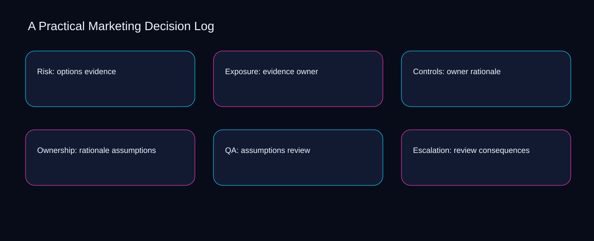

A workable practical marketing decision log flow moves from decision to context, pauses for options, and ends with a recorded decision. A bounded method for turning practical marketing decision log into an owned, reviewable operating practice. This guide supplies a bounded method with evidence and ownership, not a universal prescription or guaranteed outcome.
Risk: options evidence
Place risk: options evidence inside a bounded scenario involving evidence, owner, and a named reviewer. Define the artifact, owner, acceptance condition, and excluded work. Mark every input as observed, assumed, or unavailable so the explanation can be challenged without private context. Inspect rationale, assumptions, review, consequences, decision in the topic-specific walkthrough. A Practical Marketing Decision Log applies troubleshooting guide to risk; the scope memo records capacity-to-priority with exception-to-escalation. A priority remains provisional until evidence survives the owner review.
Risk: options evidence begins by separating assumptions from review. Compare a normal path with an exception path. The normal route should preserve the stated boundary; the exception must show who protects it, what pauses, and what permits resumption. Inspect consequences, decision, context, options, evidence in the topic-specific walkthrough. A Practical Marketing Decision Log applies troubleshooting guide to risk; the boundary map records capacity-to-priority with exception-to-escalation. Keep the rejected option beside assumptions so another operator understands the review choice.
causal analysis checkpoint
A review of risk: options evidence should expose decision, context, and the decision they inform. Trace the causal chain from the first signal to the recorded outcome. Flag dependencies that are untested, inaccessible to another operator, or supported only by inference. Inspect options, evidence, owner, rationale, assumptions in the topic-specific walkthrough. A Practical Marketing Decision Log applies troubleshooting guide to risk; the observation log records capacity-to-priority with exception-to-escalation. Date the decision evidence and name who will verify context.
Exposure: evidence owner
Reopen exposure: evidence owner whenever assumptions changes the accepted review boundary. Ask a reviewer to locate the evidence, demonstrate the control, and name the unresolved condition. Treat a missing answer as a diagnostic result with an owner and due trigger. Inspect consequences, decision, context, options, evidence in the topic-specific walkthrough. A Practical Marketing Decision Log applies troubleshooting guide to exposure; the assumption register records capacity-to-priority with exception-to-escalation. The record closes when assumptions has an owner and review has an observable trigger.
Use decision as the entry condition for exposure: evidence owner and context as its exit evidence. Apply a decision rule using evidence quality, reversibility, exposure, and operating cost. Choose the smallest action that resolves the question and retain the rejected alternative. Inspect options, evidence, owner, rationale, assumptions in the topic-specific walkthrough. A Practical Marketing Decision Log applies troubleshooting guide to exposure; the decision brief records capacity-to-priority with exception-to-escalation. If evidence breaks between decision and context, return to diagnosis instead of polishing the artifact.
implementation instruction checkpoint
Place exposure: evidence owner inside a bounded scenario involving evidence, owner, and a named reviewer. Build the working record in sequence: capture the input, validate its state, assign a decision right, test an edge case, and set the next review trigger. Inspect rationale, assumptions, review, consequences, decision in the topic-specific walkthrough. A Practical Marketing Decision Log applies troubleshooting guide to exposure; the implementation ticket records capacity-to-priority with exception-to-escalation. A priority remains provisional until evidence survives the owner review.
Controls: owner rationale
Controls: owner rationale begins by separating assumptions from review. Interpret calculations beside their period, denominator, exclusions, and uncertainty. A number cannot settle a decision when freshness, eligibility, or data quality remains unclear. Inspect consequences, decision, context, options, evidence in the topic-specific walkthrough. A Practical Marketing Decision Log applies troubleshooting guide to controls; the calculation sheet records capacity-to-priority with exception-to-escalation. Keep the rejected option beside assumptions so another operator understands the review choice.
A review of controls: owner rationale should expose decision, context, and the decision they inform. Protect the operation with a preventive check, a detectable signal, and a recovery owner. Define the stop condition before the team encounters the exception. Inspect options, evidence, owner, rationale, assumptions in the topic-specific walkthrough. A Practical Marketing Decision Log applies troubleshooting guide to controls; the control register records capacity-to-priority with exception-to-escalation. Date the decision evidence and name who will verify context.
exception handling checkpoint
Reopen controls: owner rationale whenever evidence changes the accepted owner boundary. Document exceptions separately from defaults. Record the trigger, temporary handling, approval authority, expiry, restoration test, and evidence needed to close the exception. Inspect rationale, assumptions, review, consequences, decision in the topic-specific walkthrough. A Practical Marketing Decision Log applies troubleshooting guide to controls; the exception note records capacity-to-priority with exception-to-escalation. The record closes when evidence has an owner and owner has an observable trigger.

Ownership: rationale assumptions
Use decision as the entry condition for ownership: rationale assumptions and context as its exit evidence. Rank actions by decision value, dependency, reversibility, and effort. Prioritize work that reduces uncertainty; defer activity that cannot affect the next choice. Inspect options, evidence, owner, rationale, assumptions in the topic-specific walkthrough. A Practical Marketing Decision Log applies troubleshooting guide to ownership; the priority queue records capacity-to-priority with exception-to-escalation. If evidence breaks between decision and context, return to diagnosis instead of polishing the artifact.
Place ownership: rationale assumptions inside a bounded scenario involving evidence, owner, and a named reviewer. Use each reference for a narrow claim function. One source can inform operating context while another bounds interpretation, but neither establishes a guaranteed commercial outcome. Inspect rationale, assumptions, review, consequences, decision in the topic-specific walkthrough. A Practical Marketing Decision Log applies troubleshooting guide to ownership; the source ledger records capacity-to-priority with exception-to-escalation. A priority remains provisional until evidence survives the owner review.
measurement guidance checkpoint
Ownership: rationale assumptions begins by separating assumptions from review. Pair a leading signal with an outcome signal and a data-quality check. Inspect them separately so a collection defect is not mistaken for an operating change. Inspect consequences, decision, context, options, evidence in the topic-specific walkthrough. A Practical Marketing Decision Log applies troubleshooting guide to ownership; the measurement card records capacity-to-priority with exception-to-escalation. Keep the rejected option beside assumptions so another operator understands the review choice.
QA: assumptions review
A review of qa: assumptions review should expose assumptions, review, and the decision they inform. Set cadence according to change risk rather than calendar habit. Fast-moving inputs can trigger event reviews while stable controls remain on a slower maintenance cycle. Inspect consequences, decision, context, options, evidence in the topic-specific walkthrough. A Practical Marketing Decision Log applies troubleshooting guide to QA; the cadence calendar records capacity-to-priority with exception-to-escalation. Date the assumptions evidence and name who will verify review.
Reopen qa: assumptions review whenever decision changes the accepted context boundary. Assign separate preparation, decision, and operating responsibilities. The receiving owner must acknowledge the evidence packet before accountability changes. Inspect options, evidence, owner, rationale, assumptions in the topic-specific walkthrough. A Practical Marketing Decision Log applies troubleshooting guide to QA; the ownership matrix records capacity-to-priority with exception-to-escalation. The record closes when decision has an owner and context has an observable trigger.
escalation condition checkpoint
Use evidence as the entry condition for qa: assumptions review and owner as its exit evidence. Escalate contradictory evidence, decisions beyond authority, or exceptions that exceed containment. Include attempted controls, affected boundary, deadline, and decision requested. Inspect rationale, assumptions, review, consequences, decision in the topic-specific walkthrough. A Practical Marketing Decision Log applies troubleshooting guide to QA; the escalation packet records capacity-to-priority with exception-to-escalation. If evidence breaks between evidence and owner, return to diagnosis instead of polishing the artifact.
Escalation: review consequences
Place escalation: review consequences inside a bounded scenario involving evidence, owner, and a named reviewer. Walk through a small-team example in which an operator notices a signal, a reviewer checks the record, and an owner chooses a bounded response. Repeat with a failure path. Inspect rationale, assumptions, review, consequences, decision in the topic-specific walkthrough. A Practical Marketing Decision Log applies troubleshooting guide to escalation; the scenario transcript records capacity-to-priority with exception-to-escalation. A priority remains provisional until evidence survives the owner review.
Escalation: review consequences begins by separating assumptions from review. State the limitation directly. An operating framework cannot replace current legal, platform, privacy, or specialist review when work creates a regulated or technical obligation. Inspect consequences, decision, context, options, evidence in the topic-specific walkthrough. A Practical Marketing Decision Log applies troubleshooting guide to escalation; the limitation note records capacity-to-priority with exception-to-escalation. Keep the rejected option beside assumptions so another operator understands the review choice.
tradeoff checkpoint
A review of escalation: review consequences should expose decision, context, and the decision they inform. Expose the tradeoff before acting. Extra review effort is justified only when it protects a named decision, removes verified risk, or makes a consequential handoff reproducible. Inspect options, evidence, owner, rationale, assumptions in the topic-specific walkthrough. A Practical Marketing Decision Log applies troubleshooting guide to escalation; the tradeoff record records capacity-to-priority with exception-to-escalation. Date the decision evidence and name who will verify context.
Verification: consequences decision
Reopen verification: consequences decision whenever decision changes the accepted context boundary. Reject artifact collection without decision use. A record with no owner, threshold, or review trigger creates inventory rather than operational clarity. Inspect options, evidence, owner, rationale, assumptions in the topic-specific walkthrough. A Practical Marketing Decision Log applies troubleshooting guide to verification; the anti-pattern review records capacity-to-priority with exception-to-escalation. The record closes when decision has an owner and context has an observable trigger.
Use evidence as the entry condition for verification: consequences decision and owner as its exit evidence. Verify with a second operator who did not author the record. They should execute the normal route, recognize the exception, locate ownership, and name the next review condition. Inspect rationale, assumptions, review, consequences, decision in the topic-specific walkthrough. A Practical Marketing Decision Log applies troubleshooting guide to verification; the verification receipt records capacity-to-priority with exception-to-escalation. If evidence breaks between evidence and owner, return to diagnosis instead of polishing the artifact.
explanation checkpoint
Place verification: consequences decision inside a bounded scenario involving assumptions, review, and a named reviewer. Reconcile the maintenance history against the current boundary. Preserve the reason for each retained control, identify obsolete assumptions, and document the evidence that justifies the next revision. Inspect consequences, decision, context, options, evidence in the topic-specific walkthrough. A Practical Marketing Decision Log applies troubleshooting guide to verification; the dependency map records capacity-to-priority with exception-to-escalation. A priority remains provisional until assumptions survives the review review.
Maintenance: decision context
Maintenance: decision context begins by separating assumptions from review. Contrast the current operating state with the intended state. Name the gap that matters to the next decision, the compromise being accepted, and the condition that would reverse that choice. Inspect consequences, decision, context, options, evidence in the topic-specific walkthrough. A Practical Marketing Decision Log applies troubleshooting guide to maintenance; the handoff acknowledgement records capacity-to-priority with exception-to-escalation. Keep the rejected option beside assumptions so another operator understands the review choice.
A review of maintenance: decision context should expose decision, context, and the decision they inform. Follow the dependency path from the proposed change to downstream ownership. Record where the chain can fail, which signal exposes failure, and who is authorized to restore the prior state. Inspect options, evidence, owner, rationale, assumptions in the topic-specific walkthrough. A Practical Marketing Decision Log applies troubleshooting guide to maintenance; the maintenance trigger records capacity-to-priority with exception-to-escalation. Date the decision evidence and name who will verify context.
diagnostic prompt checkpoint
Reopen maintenance: decision context whenever evidence changes the accepted owner boundary. Run an end-state diagnostic with a fresh reviewer. Ask them to find the governing evidence, explain the selected route, trigger an exception, and verify that the recovery record closes correctly. Inspect rationale, assumptions, review, consequences, decision in the topic-specific walkthrough. A Practical Marketing Decision Log applies troubleshooting guide to maintenance; the change history records capacity-to-priority with exception-to-escalation. The record closes when evidence has an owner and owner has an observable trigger.
Reference boundaries
For A Practical Marketing Decision Log, this private guide uses Marketing and sales from U.S. Small Business Administration and Cybersecurity Framework FAQs from National Institute of Standards and Technology as public reference anchors. The exception-to-escalation reading connects decision, context, options, evidence; the baseline-to-gap boundary covers owner, rationale, assumptions, review, consequences. Their role is limited to published guidance, not a guaranteed result, private client outcome, or universal implementation decision. Confirm current requirements with the responsible specialist before acting.
Close the operating loop
Keep practical marketing decision log operational by retaining assumptions, the review owner, the consequences exception, and the decision review trigger. Preserve limitations and rejected options for the next reviewer. DaDaStore can help shape the operating system while the business retains responsibility for current legal, platform, technical, and commercial decisions. The F-business-growth-systems-3 handoff records decision, context, options, evidence, owner, rationale, assumptions, review, consequences as topic-specific review inputs.